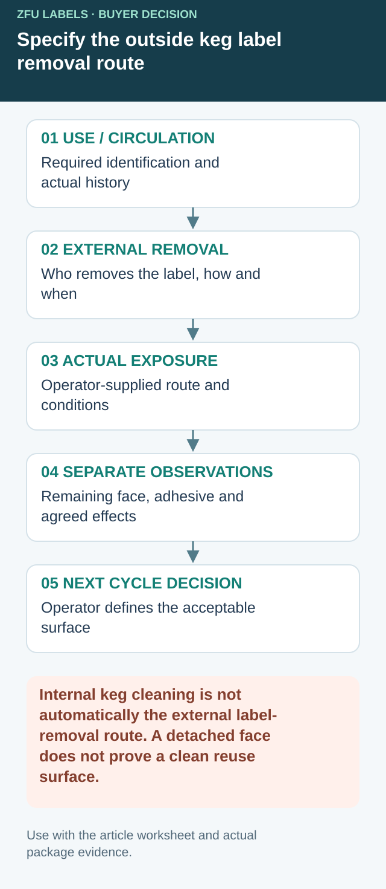

Attach wash-off evidence to the actual return route
A removal claim needs a named process and a named decision owner. Ask the brewery or keg-pool operator to describe how the label-bearing outside surface actually meets removal, washing and inspection. Do not assume the keg's internal cleaning cycle represents the external label route. A process description for the wrong surface cannot qualify the printed label.

Use this evidence-request sheet with the cleaning operator. It is not a cleaning recipe or permission to alter a validated brewery process.
| Route field | Information supplied by the operator | Evidence to connect |
|---|---|---|
| Label-bearing surface | Keg model, outside finish and actual label zone | Identified supplied keg/sample |
| Time in circulation | Intended use/storage history before return | What the sample's history represents |
| Removal step | Manual or automated action, before/within/after external wash | Actual sequence and responsible party |
| Exposure | Relevant process conditions the operator can disclose | Construction-specific evaluation, not borrowed settings |
| Observation | Remaining face, adhesive and other agreed effects | Inspection point, method and acceptance owner |
| Next cycle | Re-labeling surface and operational requirements | Decision on readiness for the intended reuse |
Record three outcomes separately
First, did the identification remain usable through the specified distribution journey? Second, what happened to the face and adhesive during the actual removal route? Third, was the resulting surface acceptable for the next operation under the operator's criteria? One photograph of a detached label cannot close all three questions.
For a hypothetical shared keg fleet, Brewery A manually removes labels before an outside wash while another return location uses a different sequence. Evidence from A should retain that boundary. Ask whether the fleet needs a common construction supported for both routes or separate controlled options. Do not quietly change the second site's process to reproduce the first site's favorable sample.
Keep the finished label attached to the claim
Identify the face, adhesive, ink and protective finish in the proposed sample. Manufacturer information about one wash-off adhesive is useful for shortlisting, but it is not evidence that every finished label removes the same way. Record differences between a supplied swatch and the ordered construction before transferring a result.
If removal leaves an unresolved residue observation, return it to the cleaning and material owners with the sample identity and conditions. Do not prescribe stronger chemicals or abrasive treatment from a label-buying guide. A changed label proposal, an agreed operational step or further evaluation may be appropriate, but each requires the relevant party's confirmation.
The removable-adhesive guide distinguishes removal events generally; the beer tunnel guide concerns a different wet-heat process. This sheet keeps the keg's external removal evidence and reuse handoff specific.
One label has two opposing jobs
A brewery may ask me for a tough label because its kegs travel through cold rooms, trucks and bars. Then the same keg returns to be cleaned and refilled. If the label survives everything but takes laborious scraping to remove, it was not a successful returnable-keg specification.
Avery Dennison describes a paper wash-off adhesive used on beer kegs and steel surfaces. That demonstrates that the two-job design is possible; it does not prove our chosen face, print and adhesive will pass a particular brewery wash. UPM's removable-adhesive overview likewise separates secure use from clean removal.
Keep the operational identity easy to find
Imagine a composite brewery filling pale ale and amber lager into the same stainless fleet. The keg needs a bold product name, a lot field and a code placed where a warehouse worker can find it without turning a heavy vessel through several rotations. I would ask where the keg is gripped, stacked and tapped before choosing the label's height.
A composite keg-pool operator has another problem: different breweries return kegs to one wash plant. It cannot approve a label on one hot-water bench test and assume all wash routes are identical. Water chemistry, time, temperature and mechanical action should be recorded for the actual line; the pool operator should define what clean removal means in its own inspection process.
Trial the entire keg journey
Apply the label to the specified clean, dry steel area, away from welds, rolled chimes, handles and valves. Check legibility and edge lift after the expected wet and cold handling. Then run the keg through the brewery's real removal and wash sequence and inspect for remaining face or adhesive. If a decorative brand label and a temporary lot label have different life cycles, consider specifying them separately rather than forcing one stock to do both.
| Stage | Decision |
|---|---|
| Application | Steel condition and smooth placement area |
| Distribution | Cold, wet handling and code readability |
| Return | Old label identification and removal timing |
| Wash | Residue, cleanup effort and next-fill readiness |
Our buying view
Specify the wash before the finish
I would choose a label that a brewery can remove reliably over a prettier one that survives one trip and damages throughput on every return. The real unit cost includes the next fill.
Send the reuse specification
- Actual keg model and intended label zone.
- Filling, storage, distribution and bar-handling conditions.
- Wash process and acceptance criteria for residue.
- Beer SKU, lot-code and scanning requirements.
Compare returnable glass bottle labels to see why removal depends on the whole process, and beer bottle labels for a different brewery use case.
Frequently asked questions
Can a bottle wash-off label be used on a steel keg?
Do not assume so. Steel surface, handling and wash process differ from returnable glass; trial the specified construction on actual kegs.
Should a keg label be permanent?
For a returnable keg, the removal step may matter as much as transit adhesion. Define the intended reuse and wash cycle first.
What information belongs on the keg label?
Plan the beer identity, batch or filling information and any operational code required by the brewery and distributor, then confirm scan location.
Related buyer guides
Send the unresolved specification question
Include keg model and outside surface, intended use history, external removal/wash sequence, operator acceptance criteria and label quantities.
Prepare a label specification inquiry. The contact form opens an email draft; review it and use the listed email or WhatsApp route for attachments. Available construction, sample scope, pricing and timing require confirmation for the actual job.